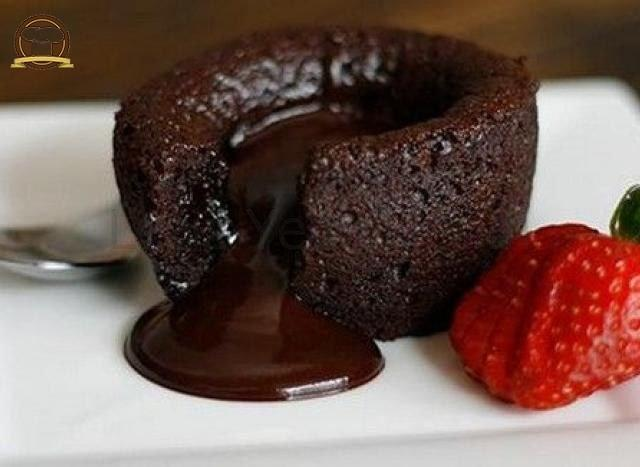

Yapılma süresi ile rekor kıran, çabucak hazırlayabileceğiniz, hızlı bir şekilde de tüketmeniz gereken sufle deneyen herkesi kendine hayran bırakacak. İçerisindeki akışkan çikolatası, yumuşacık keki ile kaşık kaşık yiyeceğiniz mükemmel bir tarif. 7’den 70’e herkesin seveceği sufleyi yapmak oldukçada kolay. Hazır almaktan yada dışarı da yemekten sizleri kurtaracak tarifimi defterinize mutlaka eklemelisiniz. Denemeyi unutmayın. Şimdiden afiyet olsun.